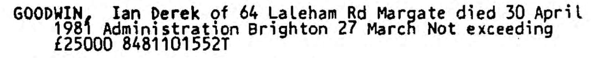
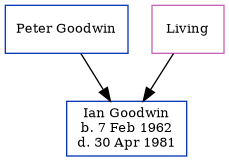

Ian Derek Goodwin 1962 - 1981
[ Home ] | [ Calendar ] | [ Surnames Index ] | [ Errors ] | [ Family History ]The child of Peter Goodwin and Mavis Cowell, Ian Goodwin, the first cousin once-removed on the mother's side of Nigel Horne, was born in Thanet, Kent, England on 7 Feb 19621,2,3. In 1981, he was living at 64 Laleham Road, Margate, Kent, England.
He died on 30 Apr 1981 in Thanet2,4,5.
Parents
- Mavis E
Citations
- England & Wales births 1837-2006 - Findmypast
- England & Wales deaths 1837-2007 - Findmypast
- England & Wales, Birth Index: 1916-2005 Online publication - Provo, UT, USA: The Generations Network, Inc., 2008.Original data - General Register Office. England and Wales Civil Registration Indexes. London, England: General Register Office. © Crown copyright. Published by permission of the Cont
- England & Wales Government Probate Death Index 1858-2019 - Findmypast
- England & Wales, National Probate Calendar (Index of Wills and Administrations)
Media
Ian Goodwin - Probate

England & Wales births 1837-2006 - BMD/B/1962/1/AZ/000637/006
England & Wales deaths 1837-2007 - BMD/D/1981/3/AZ/000383/095
England & Wales Government Probate Death Index 1858-2019 - GBOR/GOVPROBATE/C/1984-1984/00089383
Family Tree
Map
Generated by ged2site. Last updated on Jul 3, 2024
Known Issues
Residence record for 1981 contains no citation